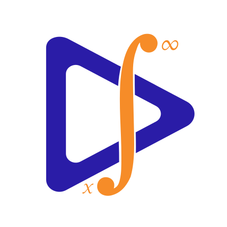
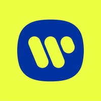

About Me
Senior backend engineer with 5+ years designing and building distributed systems, from the data model and API design to the Kubernetes clusters they run on.
-
Distributed systems
Microservices, event-driven patterns (Kafka/Redpanda), CQRS and event sourcing, in production and in an open-source POC with 10+ services. -
Polyglot backend
Go for performance-critical services, Node.js/TypeScript for full-stack work, Java/Spring in previous roles. REST and gRPC APIs in production. -
Databases
MongoDB at Forbes, PostgreSQL, ScyllaDB for time-series, ClickHouse for event stores. Chosen per workload: relational, document, time-series or analytical. -
Kubernetes & infrastructure
Multi-tenant prod/staging/dev isolation, GitOps provisioning with ArgoCD and Argo Events, Gateway API. -
Observability
Metrics, distributed tracing and structured logging as core requirements. Prometheus, Grafana, Jaeger, Loki. -
Technical leadership
Own architectural decisions from data model to deployment. Design docs, code review, mentoring.
- EXPERIENCE
-
Senior Backend Engineer
Forbes · Contract
May 2024 - Present ·
Jersey City, New Jersey, United States · Remote
Platform Team, Bertie CMS, Vetted Team
• Contributing to multi-tenant Kubernetes infrastructure across prod/staging/dev with namespace isolation
• Backend development on event-driven systems (Kafka-compatible brokers, async patterns)
• Working with GitOps automation (ArgoCD, Argo Events) for infrastructure provisioning
• Production MongoDB experience: schema design, scaling concerns, consistency patterns
• Code reviews and mentoring junior engineers on backend/systems patterns
• Full-stack contributions across frontend, backend, and infrastructure layers
Skills: Go · Node.js · TypeScript · Kubernetes · Docker · MongoDB · PostgreSQL · ArgoCD · Argo Events · Prometheus · Grafana · GCP · Linux · REST APIs · React
Senior Backend Engineer
Optimum Partners - Armenia · Full-time
May 2024 - Present ·
Yerevan, Armenia · Hybrid
[ Embedded at Forbes: Platform & Vetted Teams ]
Senior Backend Engineer · Jan 2025 - Present
• Architecting distributed Go and TypeScript services for Forbes Vetted: search, cursor pagination, scraping, data pipelines
• Event-driven architecture on Kafka-compatible brokers with async consumers
• Multi-tenant Kubernetes on GCP with namespace isolation and GitOps (ArgoCD, Argo Events)
• Leading backend delivery on Nexus initiatives; mentoring engineers on system design
Full Stack Software Engineer · May 2024 - Jan 2025
• Go and TypeScript services and integrations for Bertie CMS and Vetted
• Integrated the Zephr and Cordial platforms
• Maintaining 100% code coverage while shipping new features
• Technical documentation: architecture decisions, runbooks, design patterns
Skills: Go · Node.js · TypeScript · Kubernetes · Docker · Microservices · MongoDB · PostgreSQL · Kafka · ArgoCD · GCP · Linux · Technical Leadership

Software Engineer (Backend & Infrastructure)
Datafoundry · Full-time
Sep 2023 - May 2024 · 9 mos
Yerevan, Armenia · Hybrid
[ DF mSignal AI, DF Literature Monitor, DF mSafety AI ]
• Led large-scale refactoring across microservices architecture
• Set up and maintained frontend quality tools (ESLint) in legacy codebases
• Achieved minimum 70% unit test coverage, reduced code smells for SonarQube quality gates
• Restructured static components into reusable library-style modules for ecosystem-wide use
• Technical leadership and peer mentoring on code quality and design patterns
Skills: JavaScript · TypeScript · React · Spring · Node.js · Code Review · Technical Design · ESLint · Webpack · Jest · Technical Leadership

Software Engineer
Warner Music Group · Contract
Nov 2022 - Sep 2023 · 11 mos
New York, United States · Remote
ADA (Alternative Distribution Alliance) & DSPs (Spotify, Apple Music, etc.)
Music Royalty and Publishing Platform
Skills: TypeScript · React · Design Patterns · Java · Business Analysis · Analytics · UX · Redux · JavaScript · Node.js · Material-UI
Software Engineer
NWSLAB · Full-time
Nov 2022 - Sep 2023 · 11 mos
Yerevan, Armenia · Hybrid
[ Carpathia UI - Warner Music Group, ADA ]
• Worked in cross-cultural environment spanning Russia, Ukraine, Armenia, US, Romania, India
• Contributed to architectural decision-making with backend engineers and Solutions Architect
• Transformed Figma designs into high-quality, maintainable code
• Peer-reviewed code under Tech Lead's guidance
• Implemented generic TypeScript utility types for project-specific needs
Skills: JavaScript · React · TypeScript · ESLint · Redux · Spring · Node.js
Software Engineer
Datafoundry · Full-time
Mar 2022 - Nov 2022 · 9 mos
Yerevan, Armenia · Hybrid
[ DF mSignal AI - Clinical Trials, Signal Management ]
• Kick started a dashboard analytics app, with 4 user roles.
• Integrated and reused the legacy version of the project.
• Optimized the performance by modifying the state management.
• Refactored the codebase following the SOC concept and DRY principle.
• Designed tech solutions by collaborating with the back-end engineers.
Skills: JavaScript · React · Code Review · Saga · Ant Design · Spring · Node.js
- EDUCATION
-
Anthropic Academy: Claude with Google Cloud's Vertex AITool-calling, Agents, RAG, MCP, Vision, Prompt Caching, Claude Code, Computer Use2025
Bootcamp - "BPC Armenia" [C++, Python, Linux, Bash]Artak Yenokyan - Sr. Engineering Manager at Siemens EDA2018-2019
Projects
11 Go services, one event backbone
Hover a node to trace its edges. Drag to pan, Ctrl/Cmd + scroll to zoom. Tap a node to trace its edges. Pinch with two fingers to zoom.
- Edge
- Go service
- Streaming
- Data store
- Platform
Distributed Social Network
11 Go services over gRPC and Redpanda, with a transactional outbox, a CQRS feed and a ClickHouse event store. OpenTelemetry, Tempo, Loki and Prometheus for observability; deployed to Kubernetes with Helm and Argo CD.
Code Inspect
Code review platform: assignments are submitted as GitHub branches and tracked through review states. Spring Boot API on MySQL; changes stream through Kafka to a WebSocket server for live updates. Runs on Kubernetes behind an NGINX Ingress.
Spring Boot API, live updates over Kafka and WebSockets
Hover a node to trace its edges. Drag to pan, Ctrl/Cmd + scroll to zoom. Tap a node to trace its edges. Pinch with two fingers to zoom.
- Edge
- Service
- Streaming
- Data store
- Platform
Contact
Let's Build Together
Open to new opportunities and technical collaboration in backend and distributed systems.
Call me:
+374 95 27 68 27
Say hi:
vahan.codes@gmail.com
Message me:
t.me/vahan_sahakyan